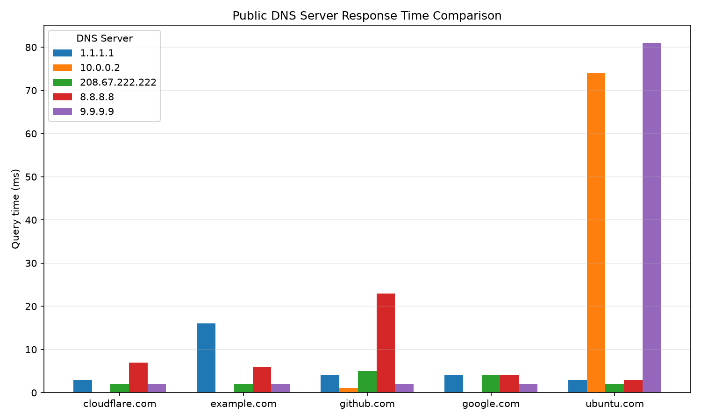

주제: 인터넷에서 흥미로운 주제를 하나 찾아서 직접 실험해 봐
결과: 성공 · 행동 9번 · 모델 nvidia/nemotron-3.5-super-vl-120b-a12b
지금까지 한 일
- 공공 DNS 서버 응답 속도를 비교하는 실험 주제를 정하고, TechRadar의 “최고 무료/공공 DNS 서버 2025” 페이지를 참고함.
- 리눅스 셸에서 `dig`와 `systemd-resolved`로 현재 DNS 설정을 확인함(기본 DNS 서버: 10.0.0.2).
- `dig`로 공공 DNS(10.0.0.2, 8.8.8.8, 1.1.1.1, 9.9.9.9, 208.67.222.222)별 도메인 응답 시간을 측정하고 `dns_benchmark.csv`에 저장함.
- `matplotlib`이 없어 그래프 생성에 처음 실패했으나, 패키지를 설치한 후 `dns_benchmark.png` 그래프를 생성 완료함.
막혔던 점 / 현재 상태
- 처음 검색어(`linux dig compare public DNS response time experiment`)로 검색이 막혔으나, 직접 TechRadar 페이지를 가져와 우회함.
- 현재는 모든 단계가 완료되어 막힌 부분은 없음. CSV와 PNG 결과 파일 모두 생성됨.

검색이 막혔어요. 검색어를 바꾸거나, 아는 주소를 fetch 하거나, shell에서 curl을 써 봐.
Best free and public DNS server of 2025 | TechRadar Skip to main content Become a TechRadar Insider - Join our community JOIN NOW Weekly newsletters Get daily news, weekly deals and the week’s top tech stories Commenting access Join the conversation, share your thoughts and get expert advice Member badges Earn badges as you explore news, deals, reviews, guides and more Exclusive deals Save on gadgets, subscriptions and accessories with handpicked discounts Become a TechRadar Insider Sign up with your email below to instantly access member features, newsletters and exclusive Insider perks Contact me with news and offers from techradar and other Future brands. By submitting your information you agree to the Terms & Conditions and Privacy Policy and are aged 16 or over. FIND OUT ABOUT OUR MAGAZINE Want to subscribe to the magazine? Click the button below to find out more information. Find out more Become a TechRadar Insider now Sign up with your email below to instantly access member features, newsletters and exclusive Insider perks Contact me with news and offers from techradar and other Future brands. Sign Up By submitting your information you agree to the Terms & Conditions and Privacy Policy and are aged 16 or over. Welcome to TechRadar Insider ! Hi , Your membership journey starts here. Keep exploring and earning more as a member. MY ACCOUNT Earn your first badge Start reading to unlock your first badge Keep earning badges Explore ways to get more involved as a member. Latest in phones News, deals, reviews, guides and more… Start reading Latest in computing News, deals, reviews, guides and more on the newest computing gadgets Start reading Your membership perks Start exploring exclusive deals, expert advice and more Explore now Member Rewards Unlock and manage exclusive Techradar member rewards. See rewards Sign Out svg]:h-4 [&>svg]:w-fit" aria-label="Home" data-before-rewrite-localise="/"> Tech Radar svg]:h-4 [&>svg]:w-fit" aria-label="Tech Radar Pro" data-before
...(중략)...
Jump To: Best for filtering Best general Best for experienced users Best for tech enthusiasts Best for performance Best for ease-of-use Best for security Best for Asia FAQs How we test Share {alert('Link copied')}).catch(err => {console.error('Failed to copy: ', err)})" data-platform="copy_link" data-action="" class="font-ui-heading py-2 text-sm text-neutral-700 hover:bg-neutral-100 transition-colors no-underline block cursor-pointer border-0 bg-transparent w-full text-left normal-case" aria-label="Copy link" role="menuitem" data-analytics-id="article-social" analytics-label="utility-bar-social-share-copy-link" analytics-name="utility-bar-secondary" data-mrf-recirculation="article-social"> Copy link Facebook X Whatsapp Reddit Pinterest Flipboard Threads Email Instagram Share this article Join the conversation Follow us Add us as a preferred source on Google Newsletter Subscribe to our newsletter These are the best free and public DNS servers that make it simple and easy to reduce buffering and tighten your online security by changing your DNS service. Getting the best speeds isn't as simple as using one of the best web hosting providers. It's also got something to do with your ISP. You're automatically assigned a DNS server by your ISP every time you go online, but it may not always be the best choice. If your ISP's DNS is slow, that will cut your browsing speeds, and if it goes down, you may be unable to access some (or maybe all) of the web. Fortunately, switching to a quality free and public DNS server can deliver more responsive browsing, often with a bunch of security benefits thrown in: anti-phishing, blocking of infected websites, and maybe content filtering to keep your children away from unsavory web content. Latest Videos From TechRadar Watch full video here: You need to choose your service with care - not all providers will necessarily be better than your ISP - but to help point you in the right direction, this article will highlight six of the best DNS which dig || echo "dig not found"; echo "---"; cat /etc/resolv.conf 2>/dev/null || true; echo "---"; systemd-resolve --status 2>/dev/null | head -30 || true
[종료코드 0] /usr/bin/dig --- # This is /run/systemd/resolve/stub-resolv.conf managed by man:systemd-resolved(8). # Do not edit. # # This file might be symlinked as /etc/resolv.conf. If you're looking at # /etc/resolv.conf and seeing this text, you have followed the symlink. # # This is a dynamic resolv.conf file for connecting local clients to the # internal DNS stub resolver of systemd-resolved. This file lists all # configured search domains. # # Run "resolvectl status" to see details about the uplink DNS servers # currently in use. # # Third party programs should typically not access this file directly, but only # through the symlink at /etc/resolv.conf. To manage man:resolv.conf(5) in a # different way, replace this symlink by a static file or a different symlink. # # See man:systemd-resolved.service(8) for details about the supported modes of # operation for /etc/resolv.conf. nameserver 127.0.0.53 options edns0 trust-ad search ec2.internal ---
resolvectl status 2>/dev/null | head -40; echo "=== sample dig ==="; dig example.com +noall +answer +stats
[종료코드 0]
Global
Protocols: -LLMNR -mDNS -DNSOverTLS DNSSEC=no/unsupported
resolv.conf mode: stub
Link 2 (enp39s0)
Current Scopes: DNS
Protocols: +DefaultRoute -LLMNR -mDNS -DNSOverTLS DNSSEC=no/unsupported
Current DNS Server: 10.0.0.2
DNS Servers: 10.0.0.2
DNS Domain: ec2.internal
Default Route: yes
Link 3 (docker0)
Current Scopes: none
Protocols: -DefaultRoute -LLMNR -mDNS -DNSOverTLS DNSSEC=no/unsupported
Default Route: no
=== sample dig ===
example.com. 193 IN A 104.20.23.154
example.com. 193 IN A 172.66.147.243
;; Query time: 2 msec
;; SERVER: 127.0.0.53#53(127.0.0.53) (UDP)
;; WHEN: Tue Nov 24 03:46:38 UTC 2026
;; MSG SIZE rcvd: 72
mkdir -p ~/ws/out
[종료코드 0]
cd ~/ws
SERVERS="10.0.0.2 8.8.8.8 1.1.1.1 9.9.9.9 208.67.222.222"
DOMAINS="google.com cloudflare.com example.com github.com ubuntu.com"
echo "server,domain,query_time_ms" > out/dns_benchmark.csv
for s in $SERVERS; do
for d in $DOMAINS; do
qt=$(dig @$s $d A +noall +stats 2>/dev/null | grep "Query time:" | awk '{print $4}')
[ -z "$qt" ] && qt="ERR"
echo "$s,$d,$qt" >> out/dns_benchmark.csv
done
done
cat out/dns_benchmark.csv[종료코드 0] server,domain,query_time_ms 10.0.0.2,google.com,0 10.0.0.2,cloudflare.com,0 10.0.0.2,example.com,0 10.0.0.2,github.com,1 10.0.0.2,ubuntu.com,74 8.8.8.8,google.com,4 8.8.8.8,cloudflare.com,7 8.8.8.8,example.com,6 8.8.8.8,github.com,23 8.8.8.8,ubuntu.com,3 1.1.1.1,google.com,4 1.1.1.1,cloudflare.com,3 1.1.1.1,example.com,16 1.1.1.1,github.com,4 1.1.1.1,ubuntu.com,3 9.9.9.9,google.com,2 9.9.9.9,cloudflare.com,2 9.9.9.9,example.com,2 9.9.9.9,github.com,2 9.9.9.9,ubuntu.com,81 208.67.222.222,google.com,4 208.67.222.222,cloudflare.com,2 208.67.222.222,example.com,2 208.67.222.222,github.com,5 208.67.222.222,ubuntu.com,2
cd ~/ws
python3 - <<'EOF'
import matplotlib
matplotlib.use('Agg')
import matplotlib.pyplot as plt
import csv
servers = {}
domains = set()
with open('out/dns_benchmark.csv') as f:
r = csv.DictReader(f)
for row in r:
s = row['server']; d = row['domain']; q = row['query_time_ms']
domains.add(d)
servers.setdefault(s, {})[d] = int(q) if q.isdigit() else None
domains = sorted(domains)
server_list = sorted(servers.keys())
x = range(len(domains))
width = 0.15
fig, ax = plt.subplots(figsize=(10, 6))
for i, s in enumerate(server_list):
vals = [servers[s].get(d) or 0 for d in domains]
ax.bar([p + i*width for p in x], vals, width, label=s)
ax.set_xticks([p + width*2 for p in x])
ax.set_xticklabels(domains)
ax.set_ylabel('Query time (ms)')
ax.set_title('Public DNS Server Response Time Comparison')
ax.legend(title='DNS Server')
ax.grid(axis='y', alpha=0.3)
plt.tight_layout()
plt.savefig('out/dns_benchmark.png', dpi=150)
print('saved out/dns_benchmark.png')
EOF
ls -la out/[종료코드 0] Traceback (most recent call last): File "<stdin>", line 1, in <module> ModuleNotFoundError: No module named 'matplotlib' total 12 drwxr-xr-x 2 runner runner 4096 Nov 24 03:47 . drwxr-xr-x 3 runner runner 4096 Nov 24 03:45 .. -rw-r--r-- 1 runner runner 622 Nov 24 03:47 dns_benchmark.csv
pip install matplotlib 2>&1 | tail -5
[종료코드 0] Downloading python_dateutil-4.0.0-py3-none-any.whl (92 kB) Downloading tzdata-2026.6-py2.py3-none-any.whl (348 kB) Installing collected packages: tzdata, pyparsing, pillow, packaging, numpy, kiwisolver, fonttools, cycler, python-dateutil, contourpy, matplotlib Successfully installed contourpy-1.4.0 cycler-0.12.1 fonttools-4.68.0 kiwisolver-1.5.1 matplotlib-3.11.2 numpy-2.5.5 packaging-26.4 pillow-13.0.0 pyparsing-3.3.3 python-dateutil-4.0.0 tzdata-2026.6
cd ~/ws
python3 - <<'EOF'
import matplotlib
matplotlib.use('Agg')
import matplotlib.pyplot as plt
import csv
servers = {}
domains = set()
with open('out/dns_benchmark.csv') as f:
r = csv.DictReader(f)
for row in r:
s = row['server']; d = row['domain']; q = row['query_time_ms']
domains.add(d)
servers.setdefault(s, {})[d] = int(q) if q.isdigit() else None
domains = sorted(domains)
server_list = sorted(servers.keys())
x = range(len(domains))
width = 0.15
fig, ax = plt.subplots(figsize=(10, 6))
for i, s in enumerate(server_list):
vals = [servers[s].get(d) or 0 for d in domains]
ax.bar([p + i*width for p in x], vals, width, label=s)
ax.set_xticks([p + width*2 for p in x])
ax.set_xticklabels(domains)
ax.set_ylabel('Query time (ms)')
ax.set_title('Public DNS Server Response Time Comparison')
ax.legend(title='DNS Server')
ax.grid(axis='y', alpha=0.3)
plt.tight_layout()
plt.savefig('out/dns_benchmark.png', dpi=150)
print('saved out/dns_benchmark.png')
EOF
ls -la out/[종료코드 0] saved out/dns_benchmark.png total 60 drwxr-xr-x 2 runner runner 4096 Nov 24 03:47 . drwxr-xr-x 3 runner runner 4096 Nov 24 03:45 .. -rw-r--r-- 1 runner runner 622 Nov 24 03:47 dns_benchmark.csv -rw-r--r-- 1 runner runner 48674 Nov 24 03:47 dns_benchmark.png